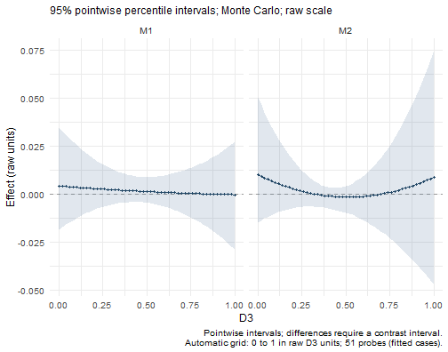

Learn the basic workflow through two examples: parallel mediation, followed by moderated mediation. Both use the package’s complete simulated data and start with the default analysis, report and plot. No external data file is needed.
Install wsMed
These tutorials describe wsMed 1.2.0. Install the released package from CRAN:
install.packages("wsMed")Or install the version on the GitHub master branch:
# install.packages("pak")
pak::pak("Yangzhen1999/wsMed@master")Restart R after updating. packageVersion("wsMed") shows
the installed version.
Match your columns to the two conditions
Use one row per participant, with separate columns for the two conditions. In this dataset, A and B are mediators and D is the outcome:
| Role | Condition 1 | Condition 2 |
|---|---|---|
| Mediator A | A1 |
A2 |
| Mediator B | B1 |
B2 |
| Outcome D | D1 |
D2 |
The analysis uses condition 2 minus condition 1.
List the mediators in the same order in M_C1 and
M_C2; wsMed constructs the difference scores internally.
These simulated variables illustrate the interface.
Example 1: parallel mediation
Run the analysis
Only the dataset and paired mediator and outcome columns are required:
result <- wsMed(
data = example_data,
M_C1 = c("A1", "B1"),
M_C2 = c("A2", "B2"),
Y_C1 = "D1",
Y_C2 = "D2"
)The omitted arguments use the package defaults:
| Setting | Default |
|---|---|
| Mediator structure | Parallel mediation (form = "P") |
| Missing data | Listwise deletion (Na = "DE"); this dataset is
complete |
| Inference | Monte Carlo (ci_method = "mc") with 20,000 draws |
| Confidence level | 95% (alpha = 0.05) |
| Reporting scale | Unstandardized (standardized = FALSE) |
| Random seed | seed = 123 |
Read the results
print(result)
#> wsMed analysis
#> Model: P | DE | Observations: 100
#> Effects:
#> wsMed all | raw scale | mc
#> 95% percentile intervals; 20000 joint draws; SE from effect draws
#> Condition contrast: C2 - C1
#> Estimate Std. Error CI lower CI upper
#> cp: Direct effect -0.031795 0.017000 -0.064525 0.001864
#> indirect_1: M1 0.001311 0.003208 -0.004601 0.008917
#> indirect_2: M2 -0.001120 0.002570 -0.007617 0.003084
#> total_indirect: Total indirect effect 0.000191 0.004111 -0.008172 0.008783
#> total: Total effect -0.031604 0.017015 -0.064740 0.001839
#> Inference draws: 20000 retained of 20000 ; 0 excluded before effect extraction.
#> Use as.data.frame() for the full-precision table and metadata.
#> Post-fit admissibility: 1 of 1 ; excluded rows: 0The report includes the direct effect, the indirect pathways through
A (M1) and B (M2), their total indirect
effect, and the total effect. Read each estimate together with its SE
and CI. The total effect is the direct effect plus the total indirect
effect. An interval containing zero does not establish a zero
effect.
To see the effect and path-coefficient tables in a statistical summary, use:
summary(result)
#> wsMed statistical summary
#> Model: P | Missing: DE | Observations: 100
#> Effects:
#> wsMed all | raw scale | mc
#> 95% percentile intervals; 20000 joint draws; SE from effect draws
#> Condition contrast: C2 - C1
#> Estimate Std. Error CI lower CI upper
#> cp: Direct effect -0.031795 0.017000 -0.064525 0.001864
#> indirect_1: M1 0.001311 0.003208 -0.004601 0.008917
#> indirect_2: M2 -0.001120 0.002570 -0.007617 0.003084
#> total_indirect: Total indirect effect 0.000191 0.004111 -0.008172 0.008783
#> total: Total effect -0.031604 0.017015 -0.064740 0.001839
#> Inference draws: 20000 retained of 20000 ; 0 excluded before effect extraction.
#> Use as.data.frame() for the full-precision table and metadata.
#>
#> Path coefficients:
#> Estimate Std. Error CI lower CI upper
#> cp -0.03180 0.01700 -0.06453 0.00186
#> b1 -0.04834 0.09555 -0.23422 0.13918
#> d1 -0.06905 0.09508 -0.25772 0.11690
#> b2 -0.07732 0.09387 -0.26459 0.10461
#> d2 -0.03676 0.08692 -0.20641 0.13385
#> a1 -0.02712 0.01772 -0.06242 0.00737
#> a2 0.01448 0.01796 -0.02033 0.04929
#> Post-fit admissibility: 1 of 1 ; excluded rows: 0
#> Tables: $effects, $coefficients; analysis settings: $info.These calls use the stored analysis; they do not fit the model again. You do not need to select table columns or write formatting code to read the results.
Plot the indirect effects
plot(result)
The default plot shows the specific indirect effects and their CIs. A point is an estimate and a horizontal line is its interval.
Example 2: add a continuous moderator
Keep the same mediator and outcome columns, and add D3
as the moderator. Here MP allows both mediator-to-outcome
difference slopes (b1 and b2) to vary with the
moderator. Moderator main effects are included automatically.
moderated <- wsMed(
data = example_data,
M_C1 = c("A1", "B1"),
M_C2 = c("A2", "B2"),
Y_C1 = "D1",
Y_C2 = "D2",
W = "D3",
MP = c("b1", "b2")
)Read the conditional effects
print(moderated)
#> wsMed analysis
#> Model: P | DE | Observations: 100
#> Effects:
#> wsMed all | raw scale | mc
#> 95% percentile intervals; 20000 joint draws; SE from effect draws
#> Condition contrast: C2 - C1
#> Moderator: D3 in raw units; centering reference = 0.452271
#> Estimate Std. Error
#> cp@1: Direct effect [D3 = 0.452] -0.034124 0.016983
#> indirect_1@1: M1 [D3 = 0.452] 0.001505 0.003187
#> indirect_2@1: M2 [D3 = 0.452] -0.001426 0.002821
#> total_indirect@1: Total indirect effect [D3 = 0.452] 0.000079 0.004260
#> total@1: Total effect [D3 = 0.452] -0.034045 0.017063
#> CI lower CI upper
#> cp@1: Direct effect [D3 = 0.452] -0.067146 -0.000556
#> indirect_1@1: M1 [D3 = 0.452] -0.004314 0.008981
#> indirect_2@1: M2 [D3 = 0.452] -0.008533 0.003150
#> total_indirect@1: Total indirect effect [D3 = 0.452] -0.008900 0.008848
#> total@1: Total effect [D3 = 0.452] -0.067365 -0.000430
#> Inference draws: 20000 retained of 20000 ; 0 excluded before effect extraction.
#> Use as.data.frame() for the full-precision table and metadata.
#> Post-fit admissibility: 1 of 1 ; excluded rows: 0With a continuous moderator, the default report evaluates effects at its centering reference, the fitted-sample mean for this complete dataset. The report identifies that value. These are effects at that reference, not averages of effects across participants.
Plot how the indirect effects change
plot(moderated)
The default plot now shows conditional indirect-effect curves across the observed moderator range. The horizontal axis uses the moderator’s original units, and the bands are pointwise CIs. No additional plotting settings are required.
Specify more only when you need it
The first call can also be written with its settings explicitly stated:
result <- wsMed(
data = example_data,
M_C1 = c("A1", "B1"),
M_C2 = c("A2", "B2"),
Y_C1 = "D1",
Y_C2 = "D2",
form = "P",
Na = "DE",
ci_method = "mc",
R = 20000,
alpha = 0.05,
seed = 123,
standardized = FALSE
)This is equivalent to the minimal call in Example 1. Change an argument when your analysis needs a different model, missing-data strategy or inference method. The analysis guide explains those choices.
For a particular reporting question, add an option to the default report:
Continue with your own analysis
| Your next task | Guide |
|---|---|
| Choose serial or user-defined pathways | Choose an analysis |
| Add covariates or handle missing data | Analysis options |
| Work with categorical predictors | Categorical predictors |
| Select effects, standardize or export results | Read and export results |
| Customize a figure | Plot gallery |
| Specify, fit and inspect a model in separate steps | Staged workflow |
The empirical data used in the manuscript are also available as
wsmed_examples; see help("wsmed_examples") for
their source and variable definitions.